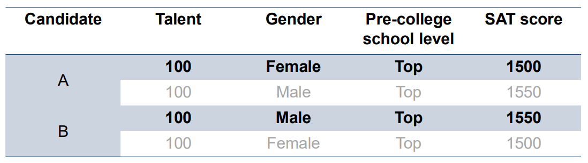

Getting Started
Installation
$ pip install cfrl
A Brief Introduction to Counterfactual Fairness
Counterfactual fairness is one variation of fairness metrics. However, unlike well-known group fairness metrics such as demographic parity and equal opportunity, counterfactual fairness defines fairness based on causal reasoning and enforces it at the individual level. In short, a reinforcement learning policy is counterfactually fair if, at every time step, it would assign the same decisions with the same probabilities for an individual had the individual belong to a different subgroup defined by some sensitive attribute (such as race and gender). At its core, counterfactual fairness views the observed states and rewards as biased proxies of the (unobserved) true underlying states and rewards, where the bias is often a result of the observed sensitive attribute. Thus, to ensure counterfactual fairness, we want the policy to be based on the true underlying states and rewards rather than their biased proxies.
Below, we provide an example to illustrate the intuition behind counterfactual fairness in the single-stage seting. We refer interested readers to Kusner et al. (2017) for a detailed discussion of counterfactual fairness in the single-stage predictions setting, and to Wang et al. (2025) for a detailed discussion of counterfactual fairness in the reinforcement learning setting.
Example: College Admissions
{kind=link}
Two candidates, A (female) and B (male), are applying for admission to a college. The table above shows the two candidates’ observed qualifications (boldened) and counterfactual qualifications (not boldened). As shown in the table, A and B have the same level of talent and would have achieved the same SAT score had they been both female or both male. However, in reality, A achieved a lower SAT score than B due to structural discrimination faced by women in her community.
Suppose the college wants to select candidates with the highest talent. Since talent is unobserved, the college can only make decisions using observed metrics (i.e. the SAT score and pre-college school level). If the decision-making is fairness-blind, then it will prefer B over A because B has a higher SAT score. However, one can argue that this is unfair because A’s lower score is a result of discrimination rather than her lack of talent. Indeed, this does not satisfy counterfactual fairness because, for example, had A been a male, then her SAT score would have been the same as B’s, and the college will see A and B as equally talented. On the other hand, the algorithm in Wang et al. (2025) requires the college to estimate B’s SAT score had he been a female and A’s SAT score had she been a male. If these estimates are accurate, then for both A and B we would observe a vector \([1500, 1550]\) of counterfactual SAT scores, and then the college would see that both candidates should be equally talented because their SAT scores would be the same had both of them been female or both of them been male. This is counterfactually fair.
This example also highlights two key differences between counterfactual fairness and equal opportunity (or demographic parity): First, the former defines fairness at the individual-level, while the latter defines fairness at the group-level. Second, the former defines fairness using causal reasoning, while the latter defines fairness by checking statistical associations and parities.
Key Functionalities
CFRL is designed with two main functionalities:
1. Provide algorithms that enforce counterfactual fairness for reinforcement learning policies. The current version of CFRL implements the sequential data preprocessing algorithm proposed by Wang et al. (2025) for offline reinforcement learning. The algorithm takes in an offline RL trajectory and outputs a preprocessed, bias-free trajectory. The preprocessed trajectory can then be passed to any existing offline reinforcement learning algorithms for training, and the learned policy should be approximately counterfactually fair.
2. Provide a platform to evaluate RL policies based on counterfactual fairness. After passing in their policy and a trajectory dataset from the target environment, users can assess how well their policies perform in the target environment in terms of the discounted cumulative reward and counterfactual fairness metric.
High-level Design
Module |
Functionalities |
|---|---|
|
Implements functions that read tabular trajectory data from either a |
|
Implements the data preprocessing algorithm introduced in Wang et al. (2025). |
|
Implements a fitted Q-iteration (FQI) algorithm, which learns RL policies and makes decisions based on the learned policy. Users can also pass a preprocessor to the FQI; in this case, the FQI will be able to take in unpreprocessed trajectories, internally preprocess the input trajectories, and directly output counterfactually fair policies. |
|
Implements a synthetic environment that produces synthetic data as well as a simulated environment that simulates the transition dynamics of the environment underlying some real-world RL trajectory data. Also implements functions for sampling trajectories from the synthetic and simulated environments. |
|
Implements functions that evaluate the value and counterfactual fairness of a policy. Depending on the user’s needs, the evaluation can be done either in a synthetic environment or in a simulated environment. |
A general CFRL workflow is as follows: First, simulate a trajectory using environment or read
in a trajectory using reader. Then, train a preprocessor using preprocessor to remove
the bias in the trajectory data. After that, pass the preprocessed trajectory into the FQI algorithm in
agents to learn a counterfactually fair policy. Finally, use functions in evaluation to
evaluate the value and counterfactual fairness of the trained policy. See the
“Example Workflows” section for more detailed workflow examples.